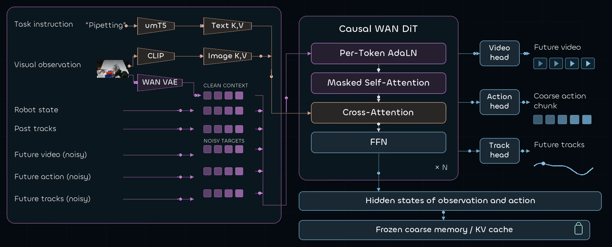
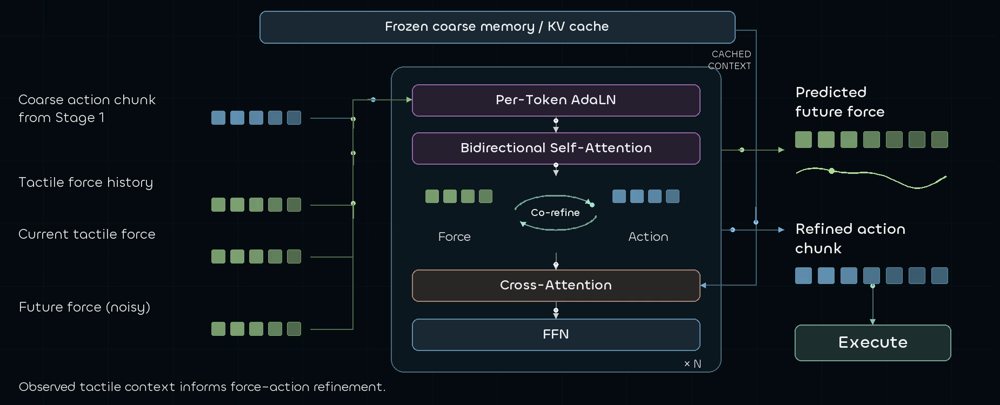

Track-Guided
Coarse Planner
Jointly predicts future video, visual tracks, and coarse actions. Cached coarse memory carries the visual plan into the next stage.
Ten task segments cut from the main FACT film. Clips autoplay muted and loop; expand for a larger view.
Human demonstrations offer a scalable alternative to costly robot data collection for dexterous manipulation, but most human datasets lack force measurements. Dexterous manipulation requires not only visual and proprioceptive understanding but also the ability to anticipate and regulate interaction forces. To scale force-aware human–robot co-training, we introduce EgoForce, a large-scale human tactile dataset capturing force-rich manipulation experience, and combine it with robot demonstrations for pretraining. We present FACT, a robot foundation model that cascades from prospective visual planning to force-aware refinement for dexterous manipulation. FACT comprises two jointly trained components. A Track-Guided Coarse Planner jointly predicts actions, future video, and visual tracks. Future video and visual tracks also provide a shared task representation that facilitates cross-embodiment knowledge transfer and coarse action generation. Building on this coarse plan, a Force–Action Joint Refiner jointly predicts future force and refines the coarse action, allowing anticipated force and action to shape each other during refinement. We evaluate the model on ten tasks requiring fine-grained coordination and force feedback, including tool use, musical instruments, and precision laboratory procedures. Using as few as 10 robot trajectories with 90 human trajectories for fine-tuning, FACT outperforms both baselines, with success-rate gains of up to 60 percentage points over T-Rex. Ablations show that force supervision in human pretraining data is crucial for downstream robot performance after fine-tuning, while visual track prediction and training with future-force prediction improve dexterous execution. Experiments varying the human–robot data ratio during fine-tuning further suggest that FACT learns from human demonstrations nearly as effectively as from robot demonstrations.
EgoForce: a large-scale human tactile dataset for robot learning.
A large-scale human tactile dataset with three egocentric RGB views and bimanual tactile gloves, spanning diverse tasks and interaction types.
Cerebral and cerebellar coupling. From a visual plan to force-aware action. Click the brain or the cerebellum to open its detailed diagram.


Jointly predicts future video, visual tracks, and coarse actions. Cached coarse memory carries the visual plan into the next stage.
Uses tactile history, current force, and the cached plan to jointly predict future force and refine the remaining action.
Real-robot results across ten contact-rich tasks.


Binary tasks are evaluated over ten rollouts. Harp and xylophone report clean notes out of 10; pipette volume reports engaged trials out of 10 and the volume error in microliters on engaged trials. Source: FACT, Tables I–II.
Copy the BibTeX entry below.